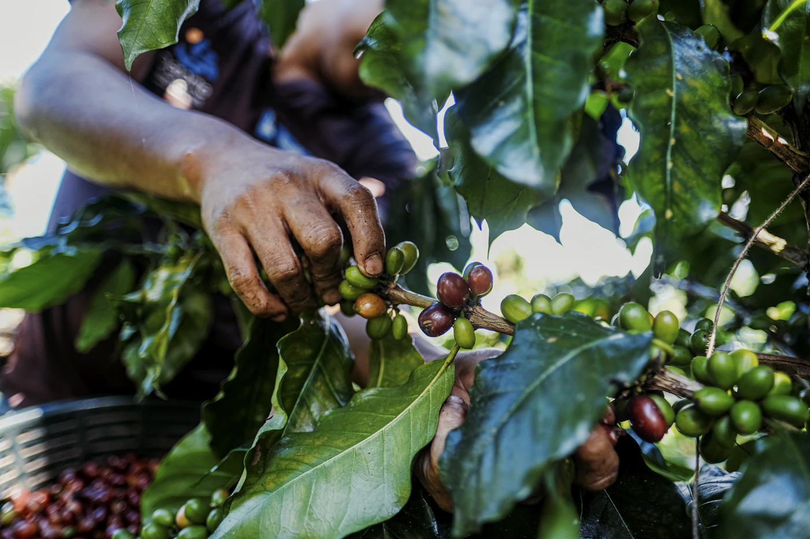
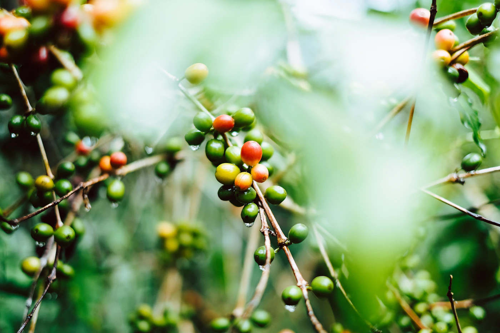
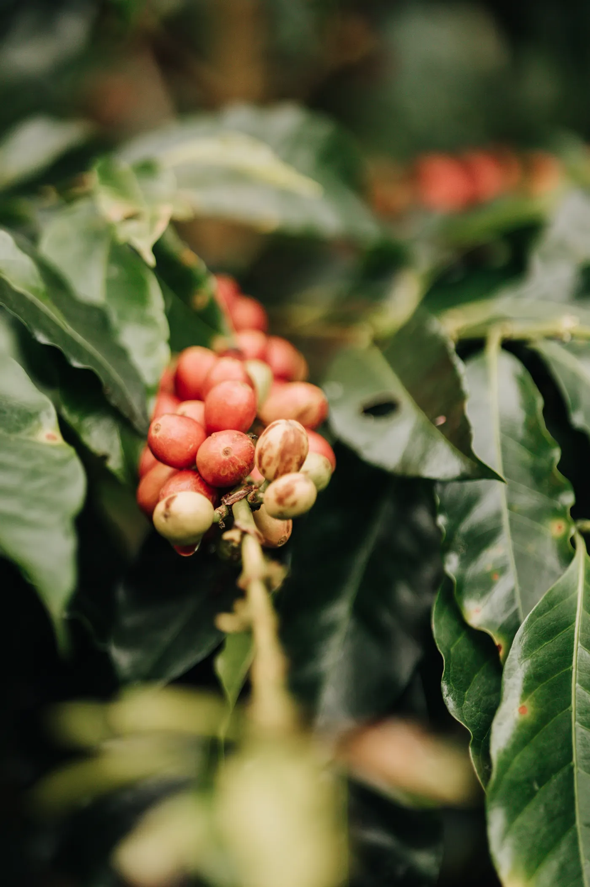
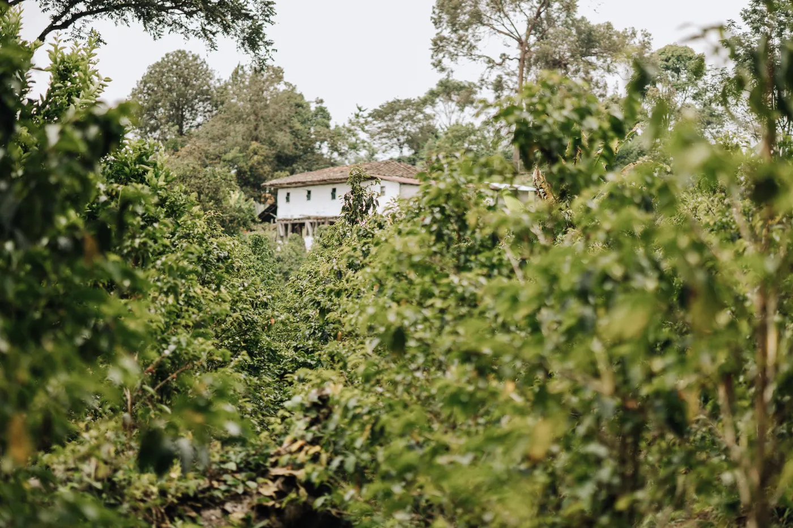
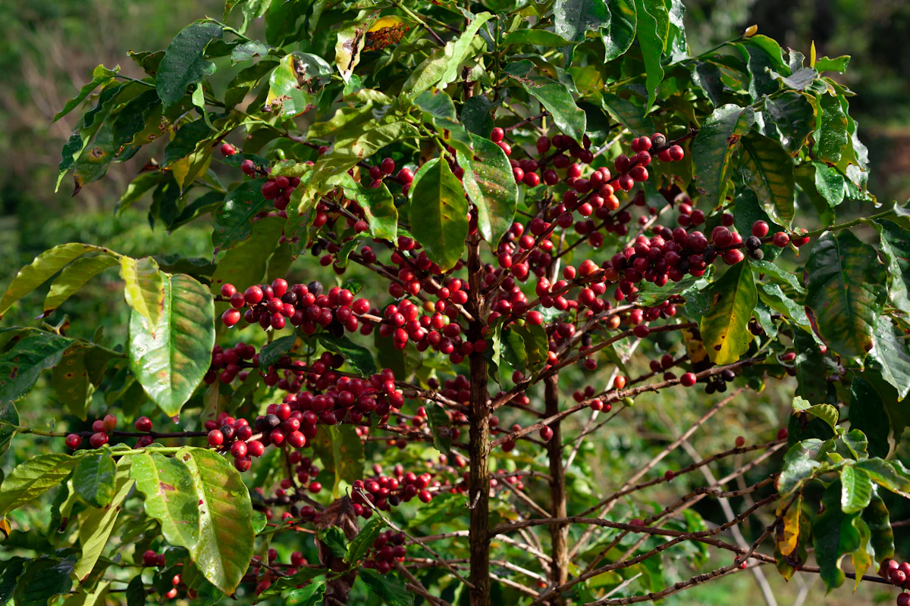
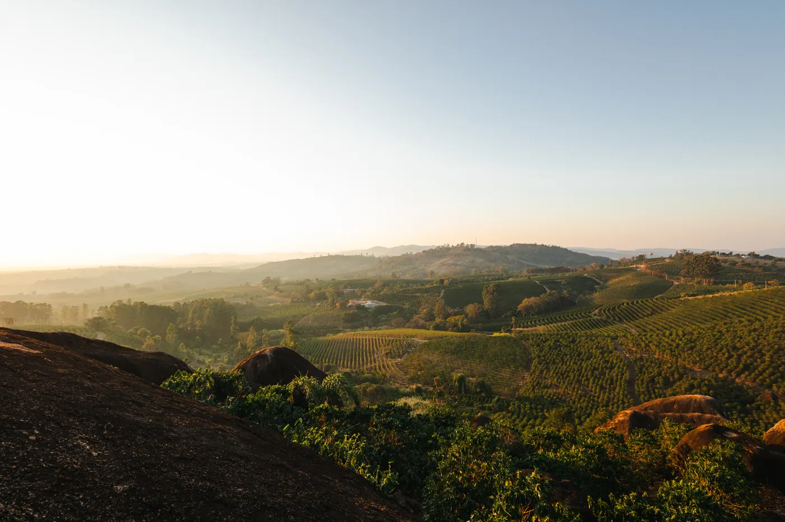
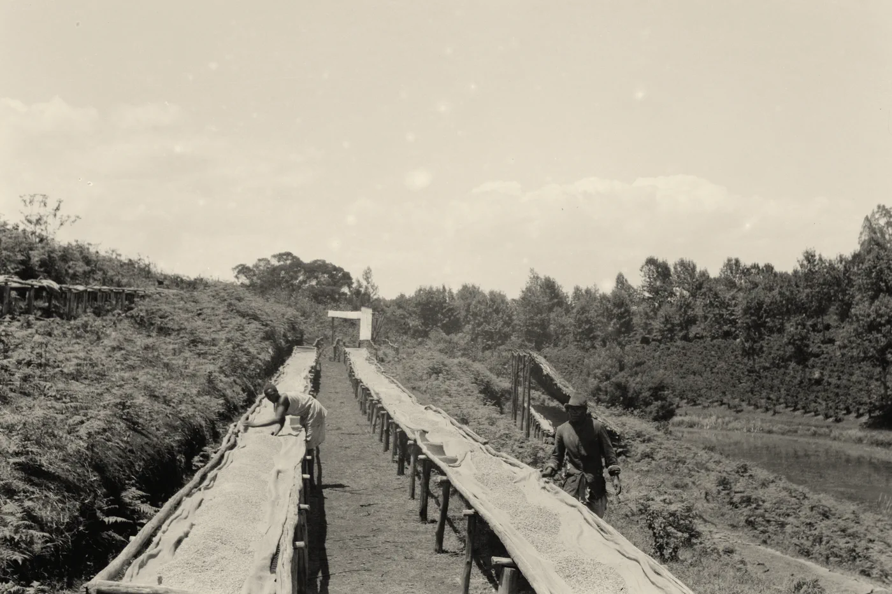
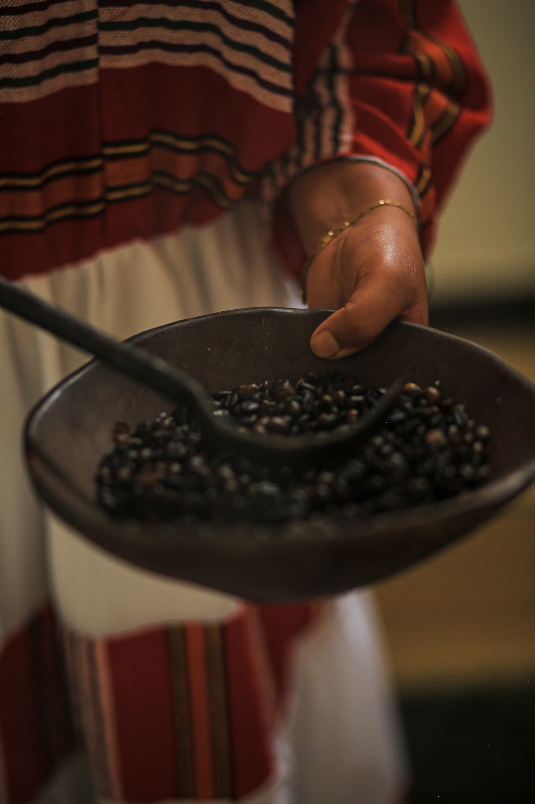
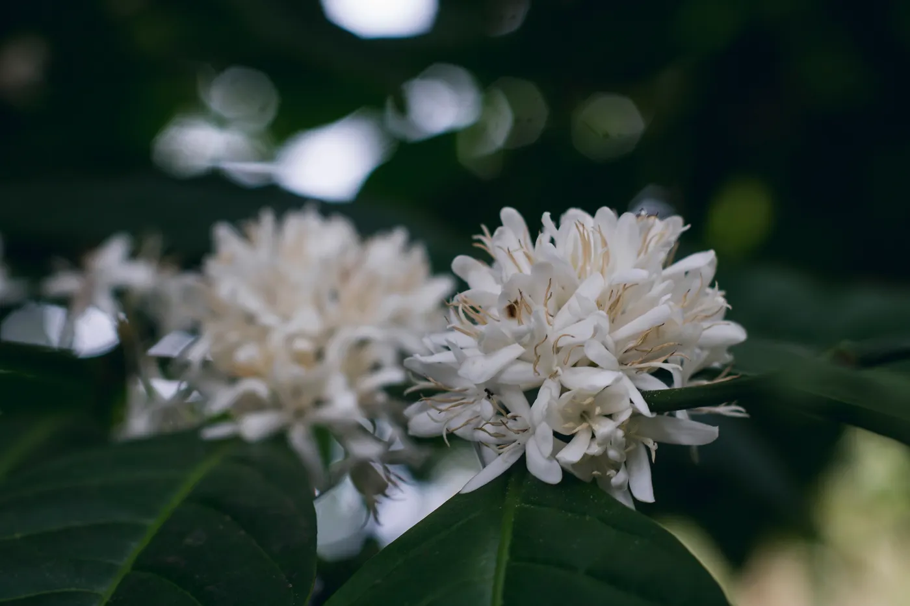
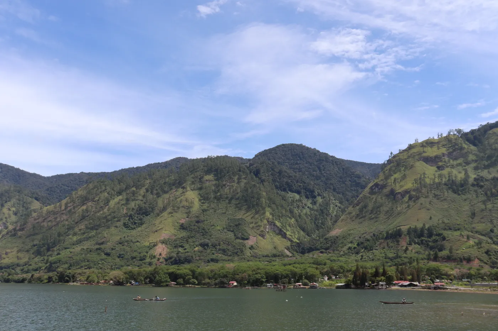

Every season the roaster leaves Merrowick with a wooden sample chest and six empty slots. Green coffee can be ordered from a list, but a list cannot tell you how a farm smells after rain. So we go, holding one bearing at a time, and come home when every slot is full. Pull up a stool.
Orders: six slots, six farms, one season. Cup everything. Bring home only what we would drink ourselves.
Made fast at Santo Tomás at dusk. Two days by road, west and up into the Cuchumatanes. At Finca Viento Seco the last cherries were coming off the top rows. The owner wet a finger and held it up: the warm wind from Mexico, she said, is why frost never reaches them.

Hands picking ripe cherries, San Marcos, Guatemala

Green cherries with dew, Tajumulco, Guatemala
Found and stowed
Leg 2 of 6
Day 20 · 3 April
Cartagena, Colombia
10°24′N 75°32′W
Course from last port
Santo Tomás de Castilla, Guatemala 15°41′N 88°37′W
Wind NE 18 kn · Sea moderate
Ship’s log
Anchored off Cartagena in a fresh trade wind. Three days south by road, the last hour in a painted chiva with sacks on the roof. Huila was starting its mitaca, the smaller second picking. El Rumbo means “the course”. We took it as a sign and cupped until dark.

Ripe cherries on the branch, Huila, Colombia

Coffee rows below a farmhouse, Huila, Colombia
Found and stowed
Leg 3 of 6
Day 48 · 1 May
Santos, Brazil
23°59′S 46°18′W
Course from last port
Cartagena, Colombia 10°24′N 75°32′W
Wind SE 8 kn · Sea slight · Low cloud
Ship’s log
Alongside at Santos. The red hills of Mogiana take their name from the old railway that once carried their coffee on its way to this quay. Picking began the morning we reached Fazenda Pedra Clara. By noon the patio was striped with cherries, raked into rows to dry.

Ripe cherries, São Sebastião da Grama, Brazil

Coffee hills at sunset, Espírito Santo do Pinhal, Brazil
Found and stowed
19 May · Off the Cape. Wind NW 45 kn, seas 7 m. Chest lashed to the table. Half cups only.
Leg 4 of 6
Day 76 · 29 May
Mombasa, Kenya
4°03′S 39°39′E
Course from last port
Santos, Brazil 23°59′S 46°18′W
Wind SSE 17 kn · Sea moderate · Rain
Ship’s log
Mombasa in the long rains. Up-country by train and road to Nyeri, where Mount Kenya showed its peak for an hour at dawn. The early crop was coming in to Gakiriko Factory. At dusk the growers queued with their sacks, and each weight went into a small book.

Raised drying beds on a coffee farm, Kenya, 1936
Found and stowed
Leg 5 of 6
Day 90 · 12 June
Djibouti, Republic of Djibouti
11°36′N 43°08′E
Course from last port
Mombasa, Kenya 4°03′S 39°39′E
Wind W 26 kn · Khamsin · Dust haze
Ship’s log
Djibouti in a hot wind. Train to Dire Dawa, on to Addis, then a day south through false banana gardens. Picking ended in January, but Bokkicho had kept one lot back in parchment. They roasted a handful in a pan over charcoal and passed it round. Jasmine.

Freshly roasted beans, Shashemene, Ethiopia
Found and stowed
Indian Ocean, 02:00. Monsoon swell astern, stars between squalls, five slots full.
Leg 6 of 6
Day 112 · 4 July
Belawan, Sumatra, Indonesia
3°47′N 98°41′E
Course from last port
Djibouti, Republic of Djibouti 11°36′N 43°08′E
Wind SW 9 kn · Squall at dawn
Ship’s log
A squall at first light, then Belawan steaming in the sun. A day up the mountain road to Takengon and Lake Laut Tawar, where the fly crop was in. Wet-hulled beans lay on tarpaulins along the lake road, darkening to jade. Kabut Tinggi means “high mist”; by four it came down.

Coffee in flower, Aceh, Indonesia

Lake Laut Tawar, Takengon, Aceh, Indonesia
Found and stowed
Homeward by Suez. Six slots full, and the cabin smells of six countries at once.
The sun was going down behind Ropewalk Quay as the lines went ashore. The chest came up the gangway first, before anyone’s kit. Tomorrow we light the roaster, and six farms become six coffees.